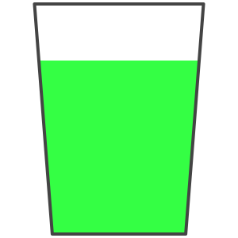
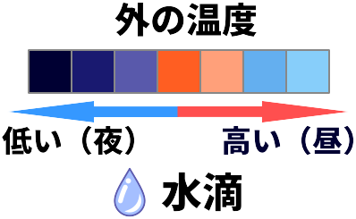

ホームに戻る
違うものを調べる
室内の暖かい空気が冷たい窓に触れ、水蒸気量が飽和水蒸気量を超えることで、
水滴が発生します。 そのため水滴は窓の内側に発生します。
＜実験内容＞
室温
20
℃ 、空間内の水分量
5.0
g/m³ の部屋があり
外の気温が
20
℃ の時の窓の様子を観察する。
実験を開始する
室温 (窓のまわりの温度) :
20
°C
＋
(1℃上がる)
－
(1℃下がる)
空間内の水分量:
5.0
g/m³
加湿する
(1g/m³増える)
除湿する
(1g/m³減る)
外の気温
:
20
°C
＋
（1℃上がる）
－
（1℃下がる）
 
結露が発生！
湿度:
28.9
%
水蒸気量
水滴の量
まだ空気中に含むことができる水蒸気量